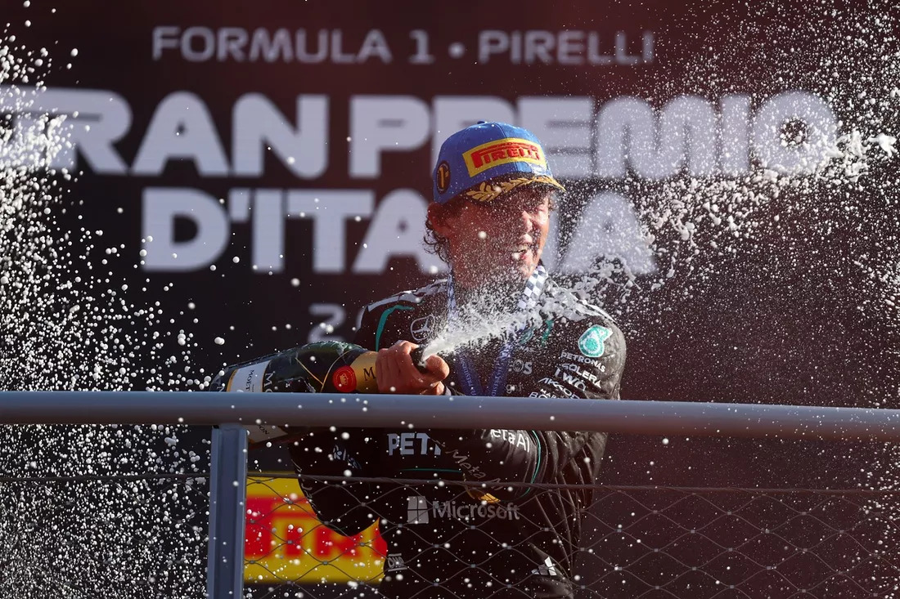

Antonelli es calificado como un "talento generacional" tras su victoria en Italia

La comentarista de Sky Sports F1 Naomi Schiff cree que la espectacular victoria de Kimi Antonelli en el Gran Premio de Italia consolida su estatus como un "talento generacional", advirtiendo que el joven italiano podría volverse imparable en la lucha por el campeonato.
El piloto de Mercedes de 20 años ofreció una actuación impresionante en casa, en Monza. Saliendo desde el 19º puesto en la parrilla, Antonelli remontó en el pelotón y aprovechó un coche de seguridad virtual a mitad de carrera para cambiar a neumáticos medios nuevos.